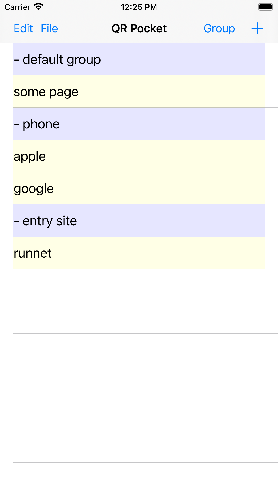
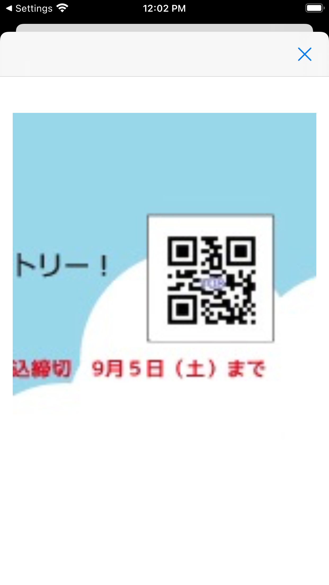
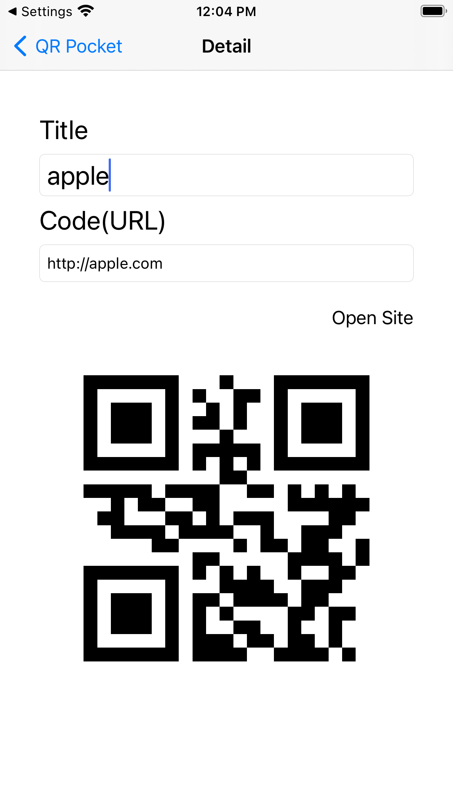

複数のQRコードを読み込み・保存し・表示します。 AirDropも有効ですが、AirDropが使用できない機器や状況では、QRコードの方が簡単になります。 QR Pocketでは、QRコードを読み込み、これらを保存し、表示することで、他端末から読み込みURL等を伝えることができます。 また当該webページを自らSafariで開くこともできます。 グループ化してQRコードを管理し、またファイルに保存することでもう一段グループ化することができます。 保存したファイルは、ファイル共有でMac等に転送可能です。 バージョン 1.0 リリース 1.1.0 Webサイトが開かなくなる問題を修正 Credit App uses icons designed from "ICOOON MONO".
|  |  |  |